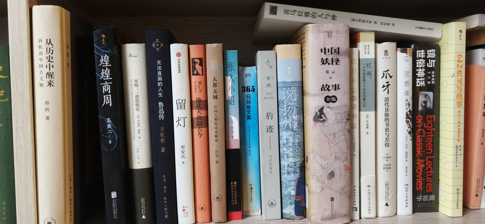

客房第二层中

- 从历史中醒来 孙机谈中国古文物 孙机著
- 煌煌商周 高虫二著 北京联合出版公司
- 巫师：一部恐惧史 The Witch: A History of Fear, from Ancient Times to the Present 英罗纳德·赫顿著 赵凯 汪纯译
- 无法直面的人生：鲁迅传 王晓明著 生活·读书·新知三联书店
- 留灯 邓安庆著
- 地北天南叙古今 黄仁宇
- 大都无城：中国古都的动态解读 许宏著
- 张大小姐 洪晃著 浙江文艺出版社 浙江出版联合集团
- 365日创意文案
- 豹迹：与记忆有关 巫鸿
- 说扬州：明清商业之都的沉浮 A Chinese City, 1550-1850
- 喜马拉雅的人与神 意大利图齐等著 向红笳译 中国藏学出版社
- 中国妖怪故事全集 张云著
- 过目不忘读书法 中国青年出版社
- 海外中国研究文库 红雨：一个中国县域七个世纪的暴力史 [美]罗威廉著 中国人民大学出版社
- 爪牙：清代县衙的书吏与差役 [美]白德瑞著 尤陈俊 赖骏楠译
- 沉思录 插图本 马可·奥勒留 何怀宏译 湖南人民出版社
- 镜与世俗神话：经典电影十八讲 Eighteen Lectures on Classic Movies
- 642件可写的事：停不下来的创意冒险 美国旧金山写作社著 徐阳译 四川文艺出版社
共 19 本书，上传于 2026-10-03 10:03:35。